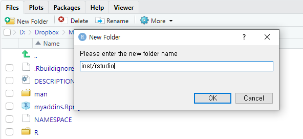
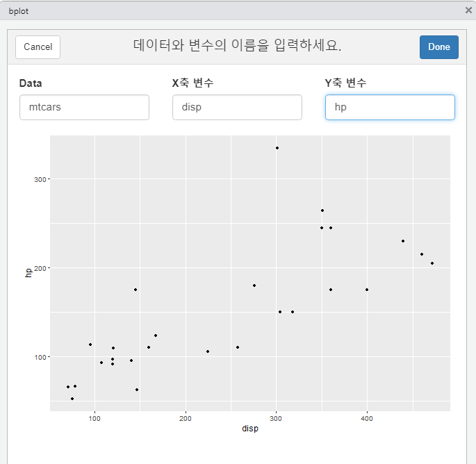

RStudio Addin을 만드는 방법
RStudio의 Addin은 상황에 따라 편리함을 제공해줍니다. 자주 쓰는 함수를 만들고 이를 메뉴에 등록하여 사용하면 시간과 노력이 덜 들게 됩니다.
RStudio에 Addin을 만드는 방법은 R 패키지를 만들고, 이 패키지의 함수를 ’addins.dcf’에 입력하면 됩니다. 그 다음에 패키지를 설치하면 자동으로 Addin으로 등록됩니다.
- R 패키지와 R 함수 만들기
- addins.dcf 파일에 입력하기
- 패키지 설치하기
R 패키지와 R 함수 만들기
RStudio를 실행하고 [File]-[New Project]-[New Directory]-[R Package]를 클릭합니다. 패키지를 만드는 창에서 패키지 이름과 프로젝트가 위치할 폴더를 지정하고 [Create Project]를 클릭합니다.
RStudio의 오른쪽 하단에 있는 창에서 [Files]탭을 보면 [R]과 [man]과 같은 폴더와 기타 파일들이 만들어져 있습니다.
Addin을 실행하는 함수는 [R]폴더에 작성하면 됩니다. 기본적으로 hello.R 파일이 작성되어 있습니다.
hello.R 파일을 열어보면 “Hello, world!”를 출력하는 hello()가 작성되어 있습니다. 이런 방법을 참고하야 본인이 자주 쓰는 함수를 작성하면 됩니다. 여기서는 hello()를 Addin으로 만들어 보도록 하겠습니다.
hello <- function() {
print("Hello, world!")
}- RStudio는 두 종류의 Addin을 지원합니다. 하나는 hello()와 같이 콘솔이나 소스 창에 텍스트를 출력하는 텍스트 매크로 형태입니다. 다른 하나는 대화창을 만들어서 사용자와 상호작용이 가능하게 하는 샤이니 가젯 형태입니다. 샤이니 가젯 형태는 나중에 다루겠습니다.
addins.dcf 파일에 입력하기
함수를 Addin으로 등록하려면 inst/rstudio/ 폴더에 addins.dcf 파일을 만들어야 합니다.
먼저 폴더를 만들겠습니다. RStudio의 오른쪽 하단 창의 [Files]탭에서 [New Folder]를 클릭하여 ’inst/rstudio’를 입력하여 폴더를 만듭니다.

다음은 addins.dcf 파일을 만들겠습니다. [File]-[New File]-[Text File]을 클릭하여 빈 문서를 만듭니다. [저장]버튼을 누르고 inst/rstudio/ 폴더에 ’addins.dcf ’라는 이름으로 저장합니다.
addins.dcf 파일에 다음과 같이 입력을 합니다. Name은 Addins 메뉴에 나타나는 메뉴 이름입니다. Description은 메뉴에 마우스 커저가 자리하면 나타나는 설명입니다. Binding은 메뉴를 눌렀을 때 실행되는 함수명입니다. Interactive는 대화창이 떠서 사용자와 상호작용을 하는 것입니다. 샤이니 가젯을 이용하여 Addin을 만들때는 ’true’로 설정합니다. hello()는 샤이니 가젯 형태가 아니기 때문에 ’false’로 설정하였습니다. 이런식으로 이 파일에 여러 개의 함수를 등록하면 여러 개의 Addin 메뉴가 만들어집니다.
Name: Hello
Description: Print 'Hello'.
Binding: hello
Interactive: false패키지 설치하기
먼저 패키지가 문제없이 만들어졌는지를 체크합니다. ’devtools::check()’를 콘솔 창에서 실행시켜 체크작업을 진행합니다. devtools 패키지가 없다면 사전에 설치하여야 합니다. 에러가 발생하면 이를 해결하는 것이 좋습니다.
다음은 설치 및 재시작을 합니다. ’devtools::install()’을 콘솔 창에서 실행시키고 R을 Restart하거나, RStudio의 [Build]탭 창에서 [install and Restart]를 실행시키면 됩니다.
[Addins] 버튼을 누르면 우리가 만든 Addin이 보입니다. 메뉴 ’Hello’를 클릭하면 콘솔창에 “Hello, world!”가 출력되는 것을 확인할 수 있습니다.
[추가] 샤이니 가젯 형태의 Addin 만들기
샤이니 가젯 형태의 Addin은 어떻게 설계하느냐에 따라 많은 기능을 구현할 수 있습니다. 여기서는 단순한 형태의 Addin을 만들도록 하겠습니다.
샤이니 가젯을 만들기 위해서는 shiny 패키지와 miniUI 패키지가 필요합니다. 이 패키지가 없다면 미리 설치하여야 합니다.
만들고자 하는 Addin은 사용자로부터 데이터, x축과 y축 변수를 입력받아 산점도를 그리는 것입니다. 이 예제에서는 ggplot2 패키지와 htmltools 패키지도 필요합니다.
- 먼저 [R]폴더에 새로운 파일을 만들어 저장하겠습니다. 우리는 “bplot.R”이라는 파일로 저장하겠습니다. 이 파일에는 다음과 같은 코드를 입력합니다. 데이터는 R에 기본적으로 내장되어 있는 데이터나 미리 불러온 데이터를 사용합니다.
# 데이터, x축과 y축 변수를 입력받아 산점도를 그리는 함수
bplot <- function() {
# 대화상자에서 데이터, x축과 y축 변수의 이름을 입력 받음
ui <- miniUI::miniPage(
miniUI::gadgetTitleBar("데이터와 변수의 이름을 입력하세요."),
miniUI::miniContentPanel(
stableColumnLayout(
shiny::textInput("data", "Data", value = "mtcars"),
shiny::textInput("x", "X축 변수"),
shiny::textInput("y", "Y축 변수")
),
# server에서 실행된 plot 결과를 출력함
shiny::plotOutput("plot")
)
)
# 대화상자에서 입력받은 내용을 바탕으로 plot 작업을 수행함
server <- function(input, output, session) {
# 산점도 출력 결과를 output$plot에 저장함
output$plot <- shiny::renderPlot({
data <- get(input$data, envir = .GlobalEnv)
x <- input$x
y <- input$y
ggplot2::ggplot(data, ggplot2::aes_string(x, y)) + ggplot2::geom_point()
})
# [Done] 버튼이 눌러질 경우
shiny::observeEvent(input$done, {
shiny::stopApp()
})
}
shiny::runGadget(ui, server, viewer = shiny::dialogViewer("bplot"))
}
# 텍스트 입력상자를 보기좋게 정렬
stableColumnLayout <- function(...) {
dots <- list(...)
n <- length(dots)
width <- 12 / n
class <- sprintf("col-xs-%s col-md-%s", width, width)
shiny::fluidRow(
lapply(dots, function(el) {
htmltools::div(class = class, el)
})
)
}패키지는 library()를 이용하여 로드하면 에러가 발생합니다. miniUI::miniPage와 같이 패키지명::함수명 형태로 함수를 입력하는 것을 추천합니다. 코드에 대한 자세한 설명은 생략하겠습니다.
- DESCRIPTION 파일을 열어 다음과 같이 입력합니다. 사용되는 패키지들을 미리 정의하고자 하는 것입니다.
Imports:
shiny (>= 0.13),
miniUI (>= 0.1.1),
htmltools (>= 0.5.1.9006),
rstudioapi (>= 0.5),
ggplot2 (>= 3.3.5)- addins.dcf 파일에 다음과 같이 입력을 합니다. Hello는 이미 입력된 내용이고 그 뒤에 Scatter Plot 부분을 추가로 입력합니다.
Name: Hello
Description: Print 'Hello'.
Binding: hello
Interactive: false
Name: Scatter Plot
Description: Plot a scatter plot
Binding: bplot
Interactive: truedevtools::check()를 콘솔 창에서 실행시켜 체크작업을 진행합니다. 다음으로 RStudio의 [Build]탭 창에서 [install and Restart]를 실행시킵니다.
[Addins] 버튼을 누르면 새로 추가된 Addin 메뉴가 보입니다. 메뉴 [Scatter Plot]를 클릭하면 아래와 같은 창이 뜹니다. 데이터, x축과 y축 변수의 이름을 입력하면 산점도가 그려집니다. 데이터는 디폴트로 ’mtcars’로 입력되어 있습니다. 변경이 가능합니다.

- [Done] 버튼을 누르면 창이 닫힙니다.
[참고 자료]
- RStudio Addins : RStudio 회사에서 제공하는 Addins 매뉴얼입니다.
- Shiny Gadgets : Shiny Gadgets 작성 방법에 대한 매뉴얼입니다.